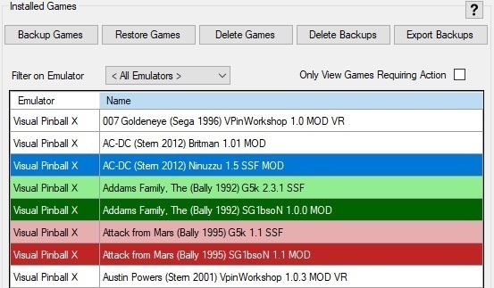
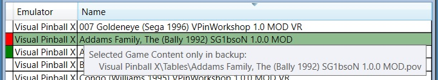
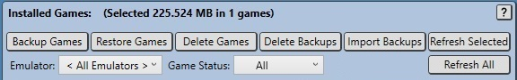

Virtual Pinball Backup Manager - managing your backups, one game at a time
Overview

Entries within this list are colour coded to indicate the status of backups for the corresponding game. Users may select one or more rows in this table to operate on using the buttons seen across the top of the table. The most recently selected row is treated as the primary row selection and information about this row is displayed in other panels within the application.
Selected rows will be highlighted in a highlight colour, this will be described in more details along with colour coding rules below.
Non backed up games use the default colouring of black text on white rows when unselected and white text on blue rows when selected.
The game AC-DC (Stern 2012) Britman 1.01 MOD in the screenshot is an example of an unselected row that has not been backed up.
The game AC-DC (Stern 2012) Ninuzzu 1.5 SSF MOD in the screenshot is an example of a selected row that has not been backed up.
Colouring of backed up games reflects the status of the individual backups by comparing the contents of each games backup , to the corresponding files found in the system. A green shading theme is used when the backup content matches the content found on the system, while a red theme is used when there are differences found between the backup file and the content found on the system. The row colours are shaded darker when rows are selected.
The game Addams Family, The (Bally 1992) G5k 2.3.1 SSF in the screenshot is an example of an unselected row that has a backup with matching content.
The game Addams Family, The (Bally 1992) SG1bsoN 1.0.0 MOD in the screenshot is an example of a selected row that has a backup with matching content.
The game Attack from Mars (Bally 1995) G5k 1.1 SSF in the screenshot is an example of an unselected row that has a backup with differing content.
The game Attack from Mars (Bally 1995) SG1bson 1.1 MOD in the screenshot is an example of a selected row that has a backup with differing content.
Viewing Backup Differences
Hovering over a game marked as not matching the backup (red rows) will provide a tooltip identifying all the differences between the backup file and the files on the system. This allows the user to better understand the inconsistency and determine how to resolve it. In the example the game Attack from Mars (Bally 1995) G5k 1.1 SSF is being hovered over (screen capture does not show the pointer icon).

Changes shown in the tooltip are broken into the following categories:
Files missing from backup
These are files found on the system (using configured file matching rules) that were not found in the backup file.
Files only in backup
These are files that exist in the backup file that were not found on the system (using configured file matching rules).
Files with differences
These are files found to have different content between the system and the backup file.
Game Details (Database) differs
The backup file contains a copy of all game details found in the PinUp database when it was backed up, this entry is an indication that one or more database entries differ between the system and backup content.
Game Registry entries differ
Some emulators store information about games in the registry (in particular Visual Pinball/vPinMame) uses the registry to save game settings). These settings are stored in the backup file. This entry is an indication that one or more registry values differ between the system and backup content.
Game custom file filters differ
This application allows users to define custom file filters to find additional game specific files associated with a game, this is described further in Custom File Filters, however this indication indicates that the custom file filters stored for the current system and game differ from those used when the backup was created.
The Filter by Emulator combo box allows users to filter the games displayed in the game details table.
There are two filtering options available:
Filter on Emulator allows users to limit displayed games to a single emulator, or all emulators
Only View Games Requiring Action allows users to hide all games that have matching backups and only show games still requiring action
Restoring Deleted Games
Refer to Restoring Game Backups for details on how to restore previously deleted games from stored backups.
Importing New Games
Refer to Importing New Games for details on how to import new games fromout side of the stored backups.
Sorting Games
The headings in the game list allow rows to be sorted. Clicking on the headers will adjust row sorting. In this example, rows are being sorted by game name in a descending order.
Sorting can be performed on both the Emulator and Name columns in either an ascending or descending order. As can be seen in the Name column heading, an arrow identifies the sort order being used.
Five buttons residing across the top of the Installed Games panel provide the key operations that are perfomed within VPBM, these operations are described below.

Backup Game
Pressing this button triggers processing to loop through all selected games and generate new backup files for them, these backup files will be stored within the configured backup directory within a subdirectory based on the games emulator. Backup files contain a full set of fiels and metadata used to restore the game when required, this content includes:
All emulator specific game files, such as (for VPX) rom files, backglass and POV files, and (for Future Pinball) BAM config files. These files will vary by emulator.
Pinup Pup Packs - for games with pup packs
Pinup Player Media - for display within Pinup Popper
A game manifest file (manifest.json) which identifies and charecterises every file within the backup file
A game details file (gameDetails.json) which stores every piece of game information found in the Pinup database Games table for the game.
A registry settings file (registrySettings.json) which stores and game specific emulator registry settings.
A custom file paths file (customFilePaths.json) which stores filter information to locate and additional 'game specific' emualtor files to be stored.
Restore Game
Pressing this button triggers processing to loop through all selected games and restoring them to a state consistant with the backup file. This action effectively performs the reverse of the Backup Selected button. All game and pinup files are restored, additionally the pinup database is updated to match the stored content and and registry settings defined for the game are also updated.
Delete Game
Pressing this button deletes the game content, removing the game entirely from the current system for all selected games. Any backup files are NOT deleted meaning that they can be re-imported if required. This is achieved using the Import/Export -> Import New menu option. A warning dialog is provided to ensure that users confirm the delete action is required.
Delete Backup
Pressing this button deletes all selected game backups, however gamre content is left as is.
Export Backup
This button is only enabled if two pre-conditions are met:
An Export Path value has been configured in settings to specify where exporeted backups should be placed.
An Export Host Identifier value has been configured in settings to specify which host to generate exported backups for.
If clicked, existing backups for all selected games will be processed, with new copies made encoded for export to the intended Export Host Identifier. Once generated, these exports can be copied onto media and transferred to the export host.
Progress Reporting
Processing triggered by these buttons can take some time, as such a progress bar is displayed across the bottom of the application while operations are occuring as shown below. Note the Import New operation does not show progress in this way.